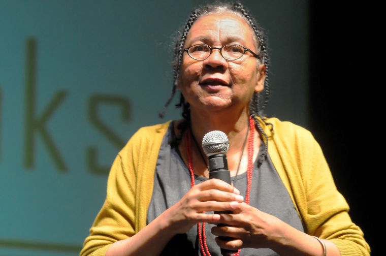
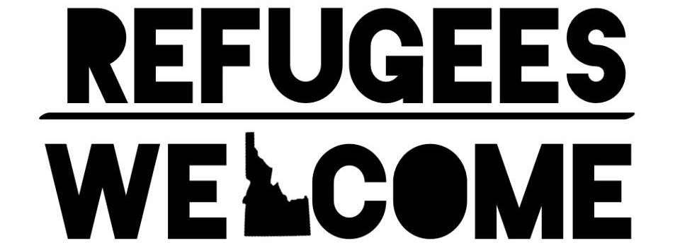

ILA Social Justice Committee, Equity, and Libraries

To follow along, load this in your browser: http://www.ryanpatrickrandall.com/talks/swila2017.html
Hello!
I'm Ryan Randall, from the College of Western Idaho!
Today I'll be talking about the ILA Social Justice Committee, plus some thoughts on social justice, equity, & libraries more broadly.
"In a world in which social justice prevailed, there would be no barriers to the elementary rights to which we are all entitled."
— Michael Gorman, Our Enduring Values Revisited, p. 159.
"…'social justice' is a concept that encompasses more than representation and diversity, and is generally understood to refer to the ability of all people to fully benefit from social and economic progress and to participate equally in democratic societies. […]"
— Myrna Morales, Em Claire Knowles, and Chris Bourg,
"Diversity, Social Justice, and the Future of Libraries", p. 440.
"…In other words, social justice addresses power and privilege on a structural level, as well as at the level of mere representation."
— Myrna Morales, Em Claire Knowles, and Chris Bourg,
"Diversity, Social Justice, and the Future of Libraries", p. 440.
ILA's Social Justice Committee
- Housing insecurity
- Food insecurity
- New Americans/Refugees
- Transgender issues
- LGBTQ+ issues
- Veteran's affairs
- Disability
- Poverty
- Anti-racism
- Intersectional approaches to these
- Whatever you want to work on!
Injustice? Libraries?
- Locating the Library within Institutional Oppression by nina de jesus
- The Unbearable Whiteness of Librarianship by Chris Bourg
- On "Diversity" as Anti-Racism in Library and Information Studies: A Critique by David James Hudson
Accountability logic

bell hooks, "Race and Feminism: The Issue of Accountability"
"A logic of accountability tries to interrupt our excuses of not being personally accountable at present for existing cultural situations that originated in the past (e.g. personal excuses such as "I never denied a woman a promotion" or "My family never owned slaves")."
— Krista Ratcliffe, Rhetorical Listening: Identification, Gender, Whiteness, p. 32
"A logic of accountability invites us to consider how all of us are, at present, culturally implicated in effects of the past (via our resulting privileges and/or their lack) and, thus, accountable for what we do about situations now, even if we are not responsible for their origins."
— Krista Ratcliffe, Rhetorical Listening: Identification, Gender, Whiteness, p. 32
Equality and Equity
Image: Interaction Institute for Social Change | Artist: Angus Maguire
"Equity does not mean equality, but it does mean fairness. It is a key element in the concept of social justice—the idea that every person in society is entitled to a fair shake."
— Michael Gorman, Our Enduring Values Revisited, p. 159.
Familiar Library Examples of Equitable Access
- Braille copies
- Talking Books program
- Bookmobiles
Cautious Optimism
Microaggressions certainly happen, even in libraries…
Cynthia Mari Orozco's LIS Microaggressions blog
Could focusing on social justice, accountability & equity also make libraries spaces for
… micro-liberations?
Madison, WI's Approach
2016 PLA Conference Presentation by Sarah Lawton (Madison Public Library) and Tariq Saqqaf (Office of the Mayor)
PLA's "FYI" Podcast episode: Engaged and Inclusive: Institutional Approaches to Racial Equity and Social Justice
Refugees / New Americans

Works Cited/Referenced
- Bourg, Chris. The Unbearable Whiteness of Librarianship.
- Gorman, Michael. Our Enduring Values Revisited: Librarianship in an Ever-Changing World.
- hooks, bell. "Race and Feminism: The Issue of Accountability." Ain't I A Woman: Black Women and Feminism.
- Hudson, David James. On "Diversity" as Anti-Racism in Library and Information Studies: A Critique.
- Morales, Myrna, Em Claire Knowles, and Chris Bourg, "Diversity, Social Justice, and the Future of Libraries".
- Ratcliffe, Krista. Rhetorical Listening: Identification, Gender, Whiteness.
Other Resources
- An article about & with links to one "Refugees Welcome" sticker.
- Refugees Welcome in Idaho on Facebook
- International Rescue Committee
- Equality & Equity Image: Interaction Institute for Social Change | Artist: Angus Maguire
- Equality & Equity image's backstory, by Craig Froehle: The Evolution of an Accidental Meme